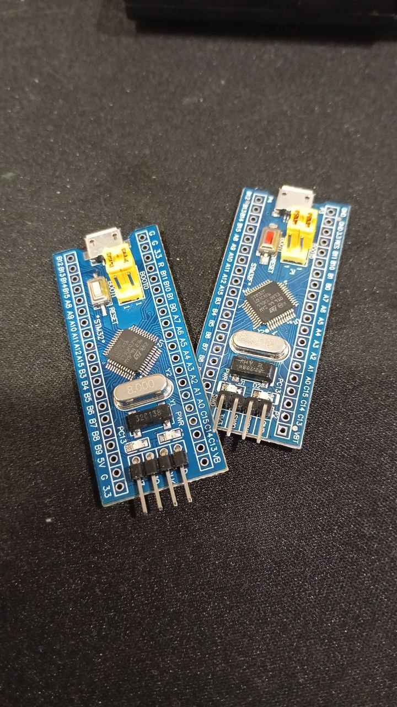

2025-07-12
15:55
#sound #avr
Начал подключать звук.
Внезапно - на колоночке слышно, как передаются данные по spi. 😱🤔 Video: (File exceeds maximum size. Change data exporting settings to download.)
20:18
#sound #avr #tetris_c
Не уверен, что я подобрал правильно звуки, сын сказал, что я в стрелялки играю, а не в тетрис.
Также потратил некоторое время чтобы подобрать паузы между нажатиями кнопок. В sdl2 система событий из коробки работает практически как нужно, а тут вся моя абстракция рассыпалась. Совсем не помогает то, что джойстик на делителе напряжений.
Если понадобится можно будет задействовать последний оставшийся таймер.
Кстати я перевел звук с таймера_1 на таймер_2, у которого пин чуть дальше, но это не помогло избавиться от “наводок”. Зато оказалось, что 8 битного таймера здесь достаточно.
P.S.
Вес прошивки вместе со звуками
avrdude: 14580 bytes of flash writtenVideo: videos/video_10@12-07-2025_20-18-21_3.mp4
20:55
#sound #sdl2 #tetris_c
С sdl2 все было проще, естественно.
Код звука и поддержки джойстика для МК приехал в одном коммите. https://github.com/bakineugene/tetris_c/commit/c86675465eecd939ee1b132fe6b198c86e759320 Video: videos/2025-07-12_20-53-10_3.mp4
19:15
#stm32 #stm32f103c8t6
Сегодня пытался завести блинк на stm32 без IDE.
Изучать я его еще не начинал, просто хотел какой-то минимальный код для мигания светодиодом.
Они из коробки были прошиты блинком, но с моей прошивкой мигать не хотели. Уже думал, может китайцы мне брак продали. Однако заливка прошивки с одной платы на другую все оживляла.
Наконец нашел отправную точку вот в этой репе https://github.com/m3y54m/start-stm32
Теперь все мигает, как положено 🎉
